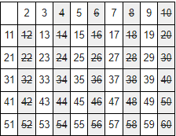
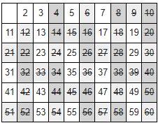
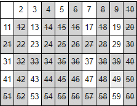
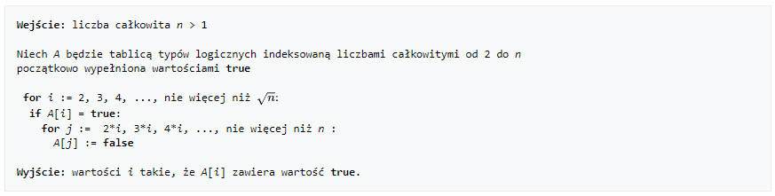

Sito Eratostenesa
Opis
Sito Eratostenesa – algorytm wyznaczania wszystkich liczb pierwszych mniejszych od danej, czyli z zadanego przedziału [2,n]. Opiera się na eliminacji liczb złożonych.
Jest przypisywany Eratostenesowi z Cyreny, najpóźniej od XVIII wieku. Algorytm ten udoskonalono; powstały bardziej wydajne jak sito Atkina.

Algorytm
Ze zbioru liczb naturalnych z przedziału [2,n], tj. {2,3,4...n}, wybieramy najmniejszą, czyli 2, i wykreślamy wszystkie jej wielokrotności większe od niej samej, to jest 4,6,8...

Z pozostałych liczb wybieramy najmniejszą niewykreśloną liczbę (3) i usuwamy wszystkie jej wielokrotności większe od niej samej: 6,9,12,..., przy czym nie przejmujemy się tym, że
niektóre liczby (na przykład 6 czy 12) będą skreślane więcej niż raz

Według tej samej procedury postępujemy dla liczby 5.

Następnie dla 7 aż do sprawdzenia wszystkich niewykreślonych wcześniej liczb.

Wykreślanie powtarzamy do momentu, gdy liczba i, której wielokrotność wykreślamy, będzie większa niż pierwiastek z n.
Dla danej liczby n wszystkie niewykreślone liczby mniejsze, bądź równe n są liczbami pierwszymi.

Pseudokod
Powyższy algorytm można zapisać w postaci następującego pseudokodu:

Powrót do głównej strony